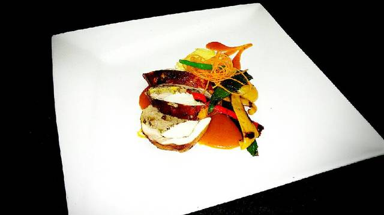
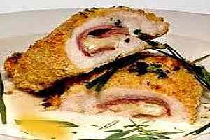

como hacer medallones de pollo 2017-02-2017 una de las miles de resetas para hacer medallones de pollo.  esta es le imagen de los medallones.
como hacer cordon blue de pollo 2017-02-12 esta es una reseta de como hacer un cordon blue de pollo tradicional.  imagen de cordon blue